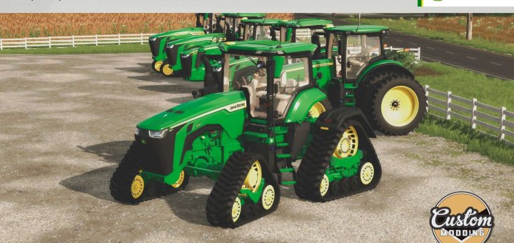
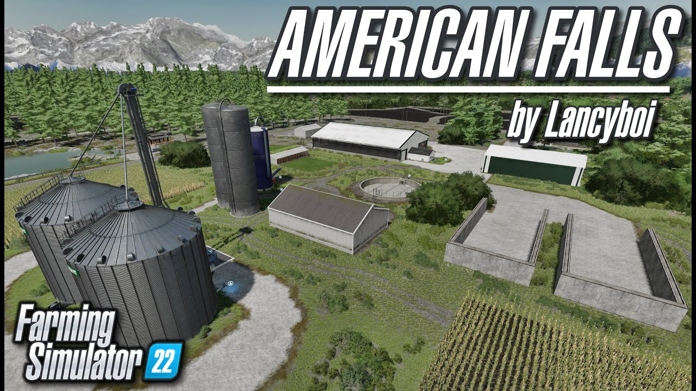
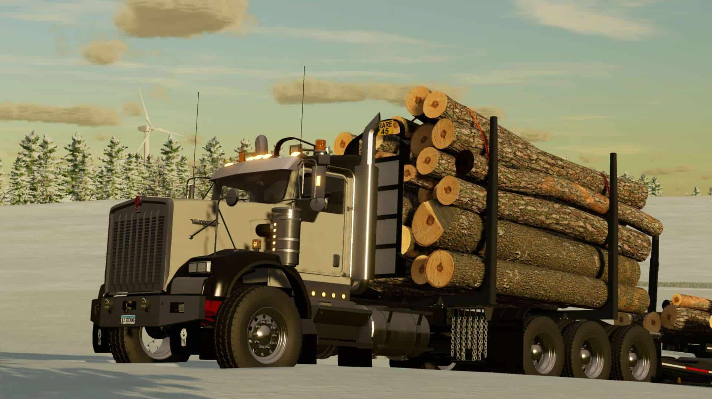

The addition of mods to the game
Ever since the ability to use mods was added, the game became where it would never become dull. One major modder is Custom Modding. They make high quality Ameriocan Spec Machinery. Another is Lanciboi. He specializes in map making and farm buildings. One that I really like but is pretty small is AJ Deere. He makes the oilfield trucks, such as the W900 in the screenshots section.
Some of the best Modders
  Mods were only avaliable to PC players but in FS17, console players got mod support. After that, the modding community has grown tremendously. For me, mods are the sole reason I play the game. If there were no mods, the game would be extremely dull. The limitations are there on console though. No external scripts or name brands that are not licensed.